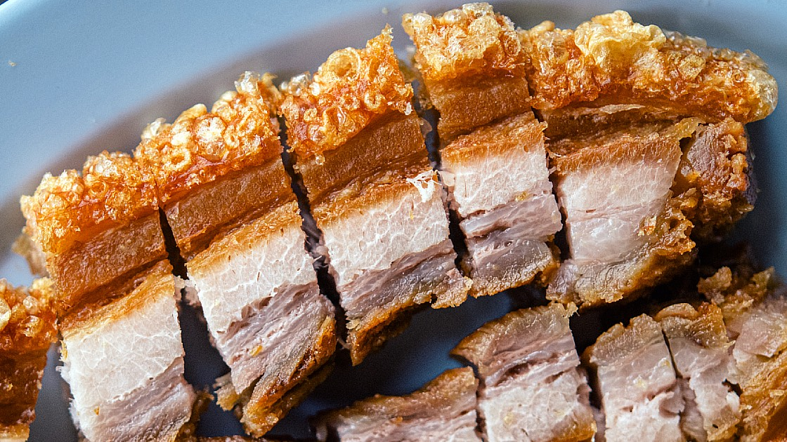

Cripy Pork

Ingredient List
- 1 to 2 Pounds Pork Belly
- 1 Tablespoon Distilled White Vinegar
- 1 Tablespoon Salt
- 1 Quart Vegetable Oil
Steps
- Use an ice pick, sharp metal skewer or another tool to prick tons and tons of holes in the skin. Avoid piercing int o the fat as best you can, and really ensure you do not pierce the flesh
- Turn the pork belly upside down. Rub the flesh (not skin) with Chinese cooking wine, dribbling it on gradually. Sprinkle over five spice powder, salt and pepper. Rub all over flesh, including sides (not on skin).
- Turn skin side up and place in a container. Dab skin dry with paper towels. Refrigerate uncovered for 12 hours (max 24 hrs, min 3 hrs).
- Preheat oven to 180C/350F (all oven types).
- Remove pork from fridge. Place onto a large sheet of foil. Fold up sides of foil around the pork to enclose it snugly (see photos in post or video) with a 1.5cm / 2/5" rim above the pork skin (to hold salt in).
- Transfer pork to baking tray. Dab skin with paper towels.
- Brush skin with vinegar.
- Spread rock salt on the skin (the foil edges will stop it from falling down the sides).
- Roast for 60 minutes.
- Remove pork from oven and transfer onto work surface.
- Switch to grill/broiler on medium high. Move shelf so it is at least 25cm/10" from the heat source.
- Fold down foil and scrape all the salt off the top and sides. Return pork only (i.e. discard foil) to baking tray.
- Place under grill/broiler for 20 - 25 minutes, rotating tray once, until skin is golden, crispy and puffed.